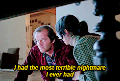

A cada ano que passa eu vou achando essas comemoração de datas clichês cada vez mais importantes, é uma marca muito importante, as coisas na vida acontece e nos surpreende de forma tão rápida que tudo tem que ser comemorado mesmo.
A facilidade que eu tenho de te escrever me assusta e já até perdi as conta de quantas cartinhas e textos te mandei tenho a impressão que já te falei tudo e ao mesmo tempo coisas novas sempre me surgem e assim vou aumentando meu repertório e melhorando cada vez mais de como eu falo de você e do que eu sinto e de como eu te vejo para você mesmo.
Quero agradecer primeiramente em te ter ao meu lado principalmente como minha namorada, não somos aquele casalzão da porra e estamos muito longe de ser um casal perfeito temos que melhorar em diversos aspectos, temos nossas limitações porém por mais curioso que pareça o que mantém a gente juntos e unidos e nunca ter desistido de tudo (chegamos perto algumas vezes) acima do amor e da gente gostar muito um do outro é a nossa paciência e perseverança. E em meio a erros e acertos, brigas e momentos de amor e carinho, mudanças de humor, correria do cotidiano, aos aprendizados constantes, as brincadeiras, aos sonhos e objetivos em comum e todas essas coisas que fortalecem ainda mais nosso amor e nossa união. Que nossa relação possa crescer e se solidificar cada vez mais e junto com isso que mantenha essa leveza que temos e que possamos comemorar juntos muitas outras datas igual a essa e nosso aniversário de namoro. Obrigado por ter deixado aquele menino que foi assistir aquele filme horrível da Liga da Justiça com você e o mesmo menino que ia te ver naquela pracinha só pra poder te dar uns amassos entrar na sua vida e vocês desacreditados e tristes consertarem um ao outro e no meio disso tudo construir uma relacionamento com a base bem sólida e almejarem alguns sonhos juntos. Fiamma Samara eu te amo de um jeito e de uma forma que é até difícil eu me expressar, obrigado por tudo mais uma vez que já fez por mim e principalmente pela gente, que eu possa sempre tá retribuindo e te fortificando quando você fraquejar. Você me mostrou o que é realmente o amor e que quando duas pessoas querem fazer dar certo nem mesmo as dificuldades e diferenças afastam essas pessoas e elas conseguem. Você é a mulher da minha vida e o meu amor para a minha vida. Por mais que as coisas sejam difíceis elas já foram mais e agora estamos começando a colher todos os frutos que nós plantamos no começo de tudo.